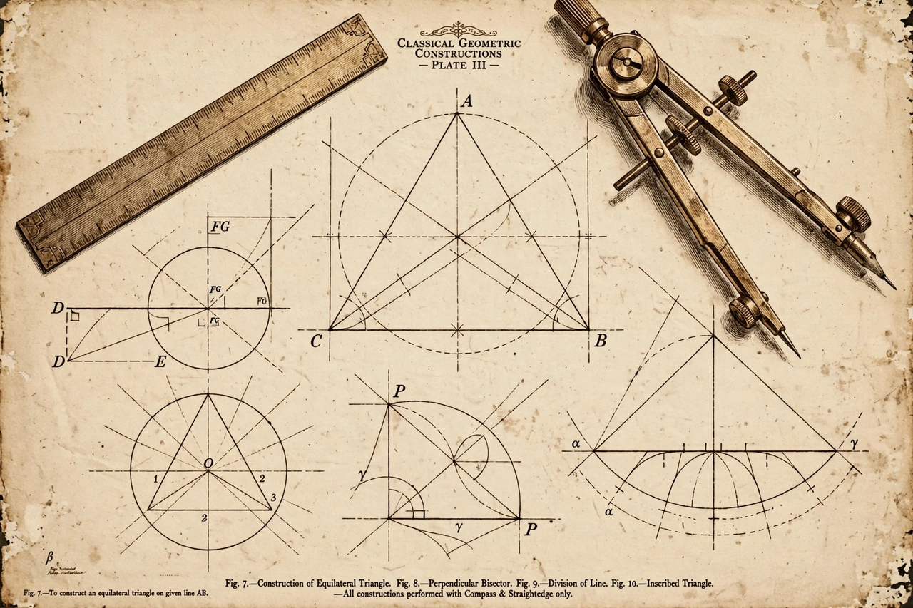

Geometry

[Image: a geometric construction with compass and straightedge — circles, triangles and intersecting lines]Geometry is a branch of mathematics concerned with properties of space such as the distance, shape, size, and relative position of figures. Geometry is, along with arithmetic, one of the oldest branches of mathematics. A mathematician who works in the field of geometry is called a geometer.
The name is Greek for "earth measurement": Egyptian and Babylonian surveyors developed practical geometry for land and building, and Greek mathematicians transformed it into a deductive system. Euclid's Elements (c. 300 BC) set out geometry from five postulates and dominated the subject for two thousand years; its results include the Pythagorean theorem and constructions with compass and straightedge.
Development
Descartes' analytic geometry (1637) fused geometry with algebra through coordinates, enabling calculus. In the 19th century, Gauss, Bolyai and Lobachevsky developed non-Euclidean geometries by denying the parallel postulate — mathematics later essential to general relativity, where spacetime itself has curved geometry. Felix Klein's Erlangen programme unified geometries by their symmetry groups.
Branches
- Euclidean and elementary geometry — points, lines, angles, polygons, circles, solids.
- Differential geometry — curves and surfaces using calculus; the language of relativity.
- Topology — properties invariant under continuous deformation.
- Algebraic and discrete geometry — geometry via algebra, and combinatorial structures; computational geometry powers computer graphics and robotics.